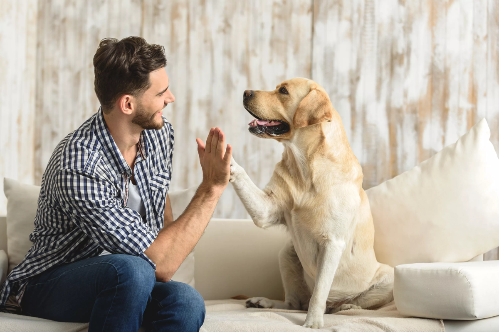
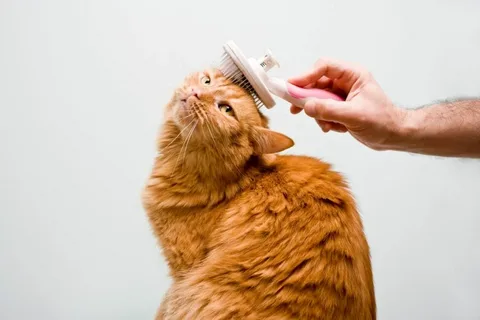
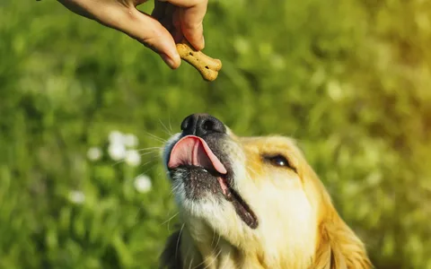
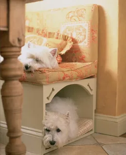
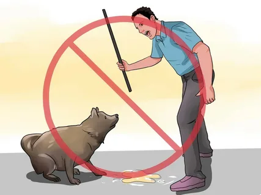
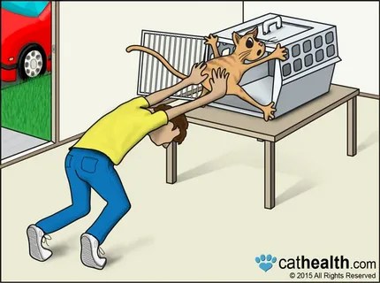
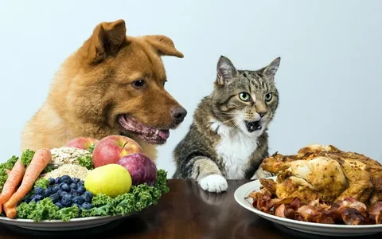
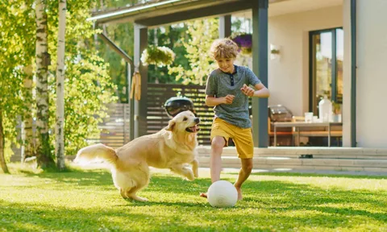

Как заботиться о своих домашних животных
Ко всем домашним животным нужно относиться с добротой, будь то кошки, собаки, кролики или рептилии. Неважно, к какому виду принадлежит ваш питомец, всегда найдется множество способов любезно с ним обращаться. Играйте со своим лучшим другом и проводите качественное время вместе, чтобы укрепить связь между вами. Изучите его манеру общения и уважайте его пространство, если он хочет, чтобы его оставили в покое. Кроме того, демонстрируйте питомцу свою привязанность, не забывая обеспечивать ему надлежащий уход, чтобы он был счастливым и здоровым.
Наладьте связь с питомцем
Играйте со своим питомцем каждый день. Чтобы предоставить ему необходимые физические и умственные нагрузки, старайтесь изо всех сил играть с ним каждый день. Если у вас собака, играйте в такие игры, как «принеси предмет» и «прятки». Если у вас кошка, играйте с ней, используя перья, лазерную указку, веревку и игрушечных мышей. Ежедневные игры особенно важны, если у вас кошка или собака. Тем не менее другие животные тоже нуждаются в играх. Например, кроликам необходимо проводить некоторое время вне клетки, чтобы оставаться физически активными. Убедитесь, что в комнате безопасно, прежде чем выпускать кролика, грызуна или другого маленького питомца из клетки. Чтобы уберечь его в безопасности, соорудите загон, чтобы он не смог убежать.
{kind=link}
Чешите и гладьте питомца в его любимых местах. При условии правильного обращения физический контакт является отличным способом наладить связь с питомцем. У каждого животного есть свои любимые места на теле, поэтому выясните, где ему приятны почесывания и поглаживания. Например, если у вас собака, попробуйте почесать ее за ушами и погладить по животу, чтобы показать, как сильно она вам дорога. Если у вас кошка, позвольте ей потереться мордочкой о вашу руку, почешите ей голову и проведите ладонью от носа до хвоста. Несмотря на то, что люди показывают привязанность при помощи объятий, большинство кошек и собак не любят, когда их обнимают. В случае кроликов, грызунов и других маленьких пушистых друзей, ни в коем случае не прикладывайте силу во время прикосновений, делайте это нежно и аккуратно. Имейте в виду, что кроликов нервирует, когда их слишком часто берут на руки.
{kind=link}
Часто хвалите питомца. Преободряющим тоном говорите своему питомцу, как сильно вы его любите. Когда он подчиняется команде или ведет себя хорошо, хвалите его, чтобы дать ему понять, что он — молодец. И кошки, и собаки могут распознавать слова и различать раздражение и радость в интонации. Кроме того, и кролики, и лошади, и многие другие животные могут определять, когда человек говорит со злостью, а когда с преободрением в голосе. Если у вас рептилия, возможно, она не будет слышать или понимать словесную похвалу, но вы все равно можете нежно погладить ее по голове или предложить ей угощение, чтобы показать свою привязанность. Главное, будьте осторожны, если у вас змея или другая рептилия, которая может укусить.
{kind=link}
Покажите питомцу свое уважение
Предоставьте питомцу пространство, если он не хочет, чтобы его трогали. Узнайте, как ваш питомец общается, и уважайте его границы, если он хочет, чтобы его оставили в покое. Разные виды животных общаются уникальными способами, поэтому изучите информацию о том, как ваш питомец выражает себя. Например, если собака виляет хвостом, значит, она счастлива, а вот если кошка виляет хвостом, это значит, что она встревожена. Другие признаки тревоги у кошек включают в себя выгибания спины, стоящую дыбом шерсть, прижатые уши, шипение и рычание. У собак к признакам стресса относятся прижатые уши, неподвижная поза, широко раскрытые глаза, зевание, рычание и чрезмерный лай.
{kind=link}
Следите, чтобы окружающая животного обстановка была максимально комфортной. Делайте все возможное, чтобы все было спокойно и предсказуемо. Придерживайтесь регулярного графика, избегайте частых перестановок мебели и никогда не дразните своего питомца. Животные любят заведенный порядок. Непредсказуемость и частая суматоха выводят домашних питомцев из душевного равновесия. Кроме того, если у вас несколько домашних животных, держите их отдельно друг от друга, если они не ладят. Если у вас есть маленькое животное, например кролик, следите, чтобы кошка или собака не подбиралась к нему.
 Не подкрадывайтесь и не пугайте питомца. Старайтесь не трогать и не приближаться к животному со спины. В противном случае, чтобы сообщить о своем присутствии, скажите что-нибудь вроде: «Привет щеночек!» — или: «Вот и котя!» Никогда не пытайтесь намеренно напугать питомца или подкрадываться к нему. Если вы испугаете животное, тем самым вы вызовете у него стресс, и кошка или собака может поцарапать или укусить вас. Некоторые домашние животные, например кролики, могут испытать серьезные проблемы со здоровьем, если застать их врасплох. Не буди лихо, пока тихо: если ваш питомец спит, позвольте ему отдохнуть, чтобы не напугать. Даже добрые кошки и собаки могут начать царапаться или кусаться, если их внезапно разбудить.
{kind=link}
Следите за здоровьем питомца
Регулярно водите питомца к ветеринару. Ежегодные обследования рекомендуется проходить большинству домашних животных. Если ваш питомец уже пожилой или имеет хроническое заболевание, его следует чаще показывать ветеринару. Если у вас кошка или собака, обязательно делайте ей все прививки, требуемые местными законами. Также следует регулярно давать кошке или собаке лекарства в целях профилактики от блох и клещей.
{kind=link}
Кормите питомца сбалансированным питанием, чтобы помочь ему поддерживать здоровый вес. Из-за ожирения резко увеличивается риск травмы и болезни, поэтому держите рацион под контролем. Покупайте специально произведенный корм для определенного возраста и вида животного, отмеряйте количество пищи, которую вы ему даете, и угощайте лакомствами в умеренных количествах. Изучайте этикетки кормов для домашних животных или уточните у ветеринара правильное количество пищи, которое стоит давать питомцу ежедневно.
{kind=link}
Убедитесь, что питомец много двигается каждый день. Физическая активность тоже поможет держать вес питомца под контролем, поэтому играйте с ним и обеспечивайте его полезными игрушками, чтобы он много двигался. Если у вас собака, обязательно выводите ее на ежедневные игровые прогулки. Необходимый уровень активности зависит от возраста и вида животного. Например, декоративной собаке нужно меньше физической активности, чем служебным породам, а щенок или старая собака не могут бегать столько же, сколько здоровая взрослая собака.
{kind=link}
Защищайте питомца от экстремальных температур и других опасностей. Если ваша кошка или собака проводит много времени на улице, убедитесь, что у нее есть доступ к убежищу с крышей. Не держите питомца на улице в жаркую погоду или при температуре ниже нуля. Если вы держите питомца в клетке или аквариуме, убедитесь, что условия там соответствуют его конкретным потребностям. Например, если у вас рептилия, поддерживайте температуру и влажность на уровне, рекомендуемом для ее вида.
{kind=link}
Ухаживайте за питомцем и держите его в чистоте. Мойте своего пушистого друга хотя бы несколько раз в неделю. Домашних животных с длинной шерстью необходимо ежедневно вычесывать. Если у вас собака, мойте ее каждые 2–4 недели или каждый раз, когда она пачкается. Кошки очень щепетильны в отношении чистоты, поэтому их, как правило, не нужно мыть. Требования по уходу варьируются в зависимости от вида животного, поэтому проконсультируйтесь с ветеринаром, если вы не уверены, что необходимо вашему питомцу. Если вы держите своего питомца в клетке или аквариуме, обязательно регулярно чистите его жилище. Чистите зубы питомца: стоматологическая помощь является важным и часто упускаемым из виду аспектом ухода за животным. Кошки, собаки и даже хорьки нуждаются в регулярной чистке зубов зубной пастой, безопасной для домашних животных.